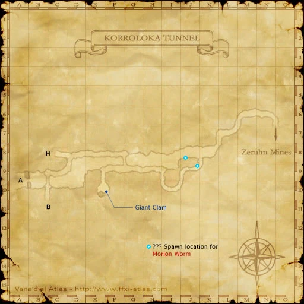
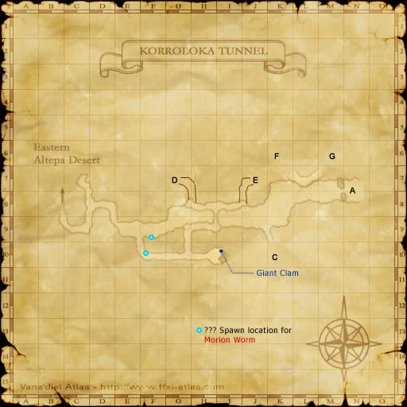
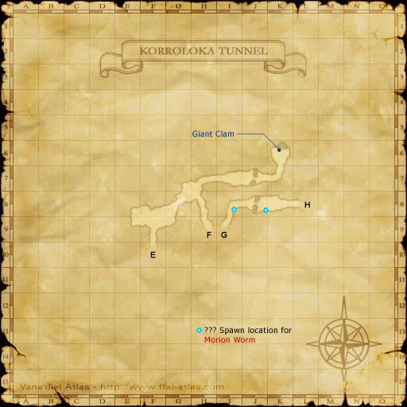
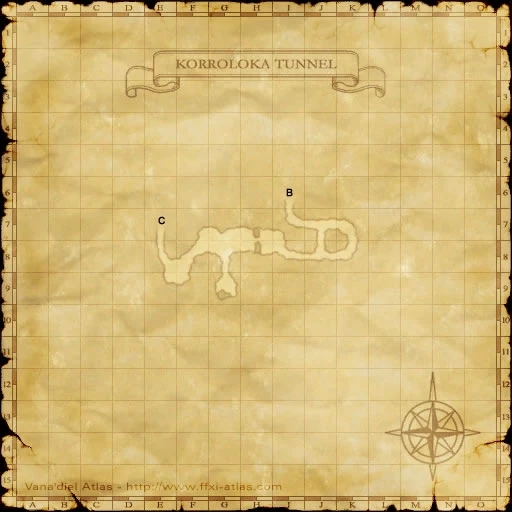
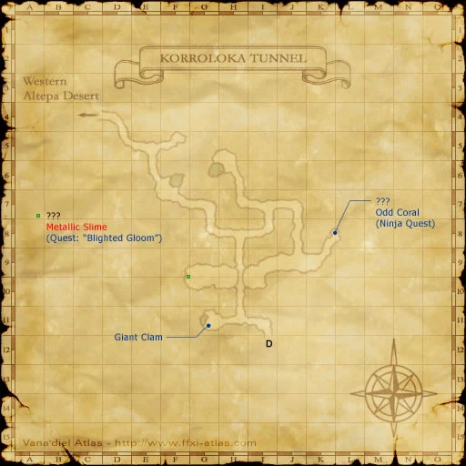
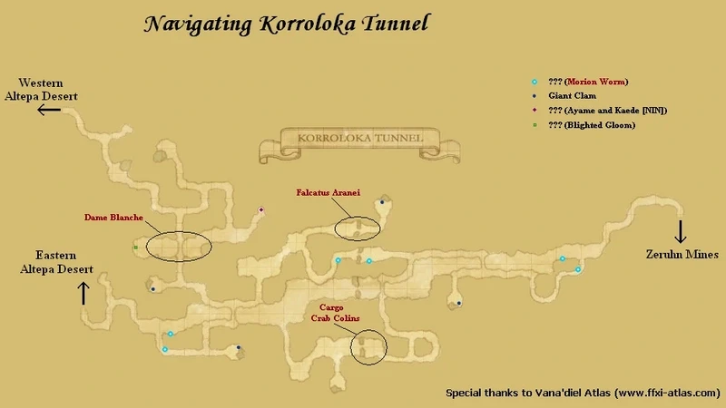

Description
Korroloka Tunnel is a dungeon in Gustaberg.
Map
Involved in Quests / Missions
| Quest / Mission | Type | Starter | Location |
|---|---|---|---|
| Ayame and Kaede | Job: Ninja | Kaede | Port Bastok (I-5) |
| Blighted Gloom | Fellow | Luto Mewrilah | Upper Jeuno (G-8) |
| Chasing Dreams | General | Zoriboh | Rabao (F-6) |
| Now Recording... | General | Darcia | Lower Jeuno (H-7) |
| Personal Hygiene | General | Gatih Mijurabi | Kazham (I-8) |
NPCs
- Giant Clam
Notorious Monsters
| Name | Level | Drops | Steal | Family | Spawns | Notes |
|---|---|---|---|---|---|---|
| Cargo Crab Colin | 35-37 | Crab Shell Land Crab Meat Nadrs | — |  CrabsImage source CrabsImage source | — | L, H, Sc |
| Dame Blanche | 37-39 | Sarcenet Cloth | — |  GhostsImage source GhostsImage source | — | A, H, HP |
| Falcatus Aranei | 32 | Spider Web Webcutter | — |  SpidersImage source SpidersImage source | — | L, H |
| Morion Worm | 30-32 | Copper Ore Darksteel Ore Iron Ore Morion Tathlum Tin Ore | — |  WormsImage source WormsImage source | — | Spawned by trading Iron Ore to a ???; Respawn: 15 minutes; A, L, H |
| Thoon | 43 | Impetus Earring | — |  GigasImage source GigasImage source | — | A, L |
Regular Monsters


Event Monsters
| Name | Level | Drops | Steal | Family | Spawns | Notes |
|---|---|---|---|---|---|---|
| Jammer Leech | 60 | Beastman Blood Carbuncle's Ruby | — |  LeechesImage source LeechesImage source | 3 | Quest: Personal Hygiene; A, L, H, Sc |
| Korroloka Leech | 32 | Beastman Blood Carbuncle's Ruby | — | LeechesImage source | 3 | Spawned Quest: Ayame and Kaede; A, L, H, Sc |
| Metallic Slime | — | — | — |  SlimesImage source SlimesImage source | 1 | Spawned Quest: Blighted Gloom |
Maps





References
External references describe their own server or retail rules. Documented Zenith changes take precedence.
Map credits: Map 1 — HorizonXI Wiki · Map 2 — HorizonXI Wiki · Map 3 — HorizonXI Wiki · Map 4 — HorizonXI Wiki · Map 5 — HorizonXI Wiki · Map 6 — HorizonXI Wiki. Original game maps © SQUARE ENIX; redrawn maps retain the credited authorship and license.


Supplemental NPC names and exits are from the base-world snapshot; expansion conditions can affect availability.
Additional level-75 reference


A long tunnel that connects the continent of Quon with the Kuzotz region, a region made up of a number of tiny islands, the largest being a desert-covered landmass known as Zepwell. This gloomy tunnel can wreak havoc on even the most experienced of adventurers. Connecting Areas
|
|


Involved in Quests/Missions
| Quest | Type | Starter | Location |
|---|---|---|---|
|
Advanced Job |
Port Bastok I-5 | ||
| Chasing Dreams | General | Zoriboh | Rabao F-6 |
|
General |
Kazham I-8 |
Weather
Excavation
NPCs Found Here
|
Fishing
| |||||||||||||||||||||||||||||||||||||||||||||||||||||||||||||||||||||||||||||||||||||||||||||||


Notorious Monsters Found Here
|
Name |
Level |
Drops |
Steal |
Family |
Spawns |
Notes | |||||||
|
35-37 |
1 |
H | |||||||||||
|
Unknown |
1 |
A, H, HP | |||||||||||
|
Unknown |
1 |
H | |||||||||||
|
60 |
3 |
A, L, H, Sc | |||||||||||
|
32 |
3 |
A, L, H, Sc | ||||||||||
| Metallic Slime (NM) | Unknown | Slime | |||||||||||
|
30-32 |
1 |
A, L, H | |||||||||||
|
HP = Detects Low HP; M = Detects Magic; Sc = Follows by Scent; T(S) = True-sight; T(H) = True-hearing JA = Detects job abilities; WS = Detects weaponskills; Z(D) = Asleep in Daytime; Z(N) = Asleep at Nighttime | |||||||||||||
Mobs Found Here
|
Name |
Level |
Drops |
Steal |
Family |
Spawns |
Notes | |||||||
|
30-33 |
9 |
A, H, HP | |||||||||||
|
29-32 |
34 |
H | |||||||||||
|
27-30 |
48 |
L, H | |||||||||||
|
35-37 |
4 |
A, L, S | |||||||||||
|
35-37 |
4 |
A, L, S | |||||||||||
|
35-37 |
4 |
A, L, S | |||||||||||
|
35-37 |
4 |
A, L, S | |||||||||||
|
28-30 |
4 |
H | |||||||||||
|
A, L, T(S) | |||||||||||||
|
30-33 |
25 |
A, H | |||||||||||
|
28-31 |
33 |
L, H | |||||||||||
|
23-27 |
20 |
A, H | |||||||||||
|
35-37 |
Fished up |
A, H | ||||||||||
|
20-25 |
37 |
H, L | |||||||||||
|
34-37 |
3 |
A, H | |||||||||||
|
32-35 |
6 |
A, H | |||||||||||
|
22-26 |
60 |
L, H | |||||||||||
|
22-24 |
Fished up |
A, H | ||||||||||
|
28-31 |
42 |
L, H, Sc | |||||||||||
|
32-34 |
2 |
M | ||||||||||
|
32-34 |
4 |
M | ||||||||||
|
HP = Detects Low HP; M = Detects Magic; Sc = Follows by Scent; T(S) = True-sight; T(H) = True-hearing JA = Detects job abilities; WS = Detects weaponskills; Z(D) = Asleep in Daytime; Z(N) = Asleep at Nighttime | |||||||||||||

Adapted from Eden Wiki: Korroloka Tunnel · Contributors and history · CC BY-SA 4.0. Revision 45436. Layout, links and optional background text adapted for Zenith.